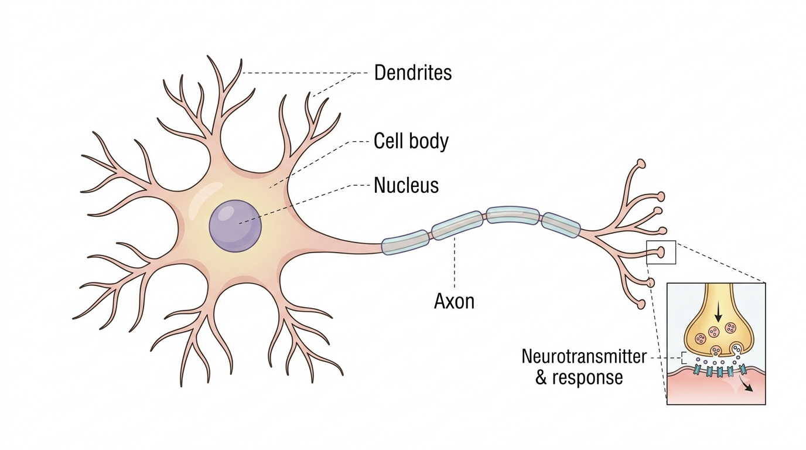
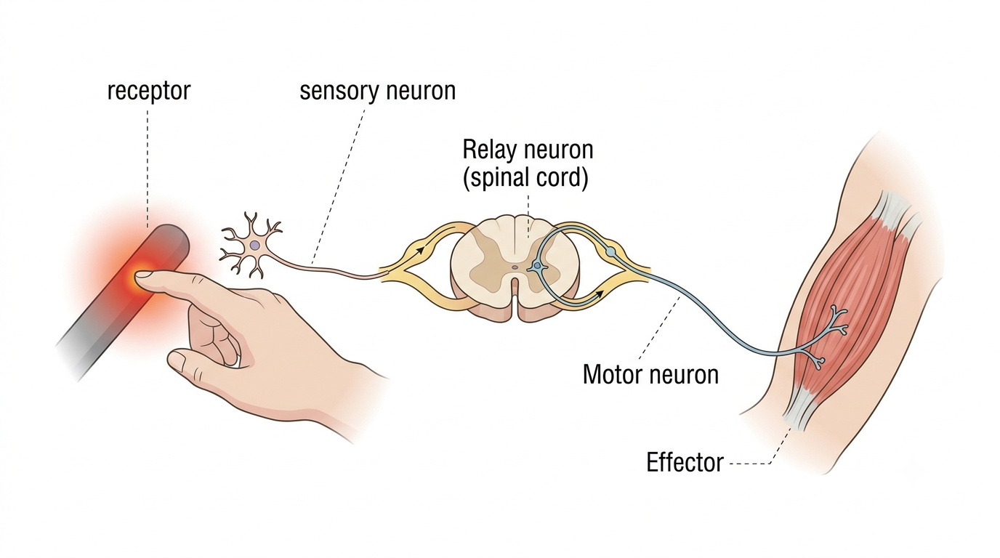
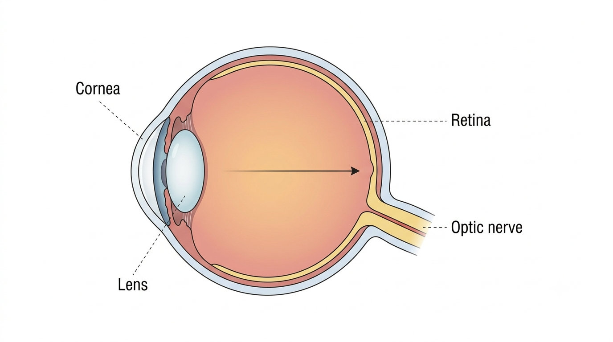
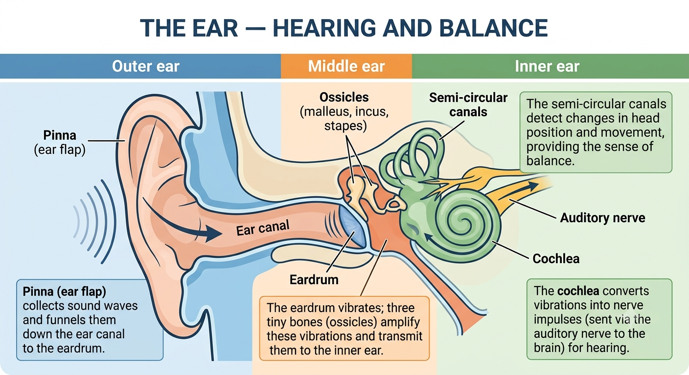

Senu-impulse skiet met ongelooflike spoed deur jou liggaam en laat jou op gevaar reageer nog voordat jy dit bewustelik opgemerk het. Verken hoe neurone, die brein, en jou oë en ore saamwerk.
'n Neuron (senusel) is die basiese funksionele eenheid van die senuweestelsel, aangepas om elektriese impulse vinnig deur die liggaam te dra. Die hoofdele daarvan is:

Die menslike senuweestelsel word in twee hoofdele verdeel:
'n Refleksaksie is 'n vinnige, outomatiese, onwillekeurige reaksie op 'n stimulus wat geen bewustelike denke vereis nie — byvoorbeeld, om jou hand van iets warms af weg te trek. Die pad wat 'n impuls volg, word 'n refleksboog genoem:
Omdat die impuls die brein kan omseil (en eerder by die rugmurg verwerk word), is reflekse baie vinniger as response wat bewustelike besluitneming vereis.

Die oog registreer lig en omskep dit in senu-impulse wat die brein as sig interpreteer:

Akkommodasie is die oog se vermoë om die vorm (konveksiteit) van die lens te verander sodat beide verre en naby voorwerpe skerp op die retina gefokus kan word. Die silliêre spiere en suspensoriese ligamente werk saam om dit te doen:
| Struktuur/verandering | Fokus op 'n VERRE voorwerp | Fokus op 'n NABY voorwerp |
|---|---|---|
| Silliêre spiere | Verslap | Trek saam |
| Suspensoriese ligamente | Word stram (spanning neem toe) | Word slap (spanning neem af) |
| Lensvorm | Word minder konveks (dunner, platter) | Word meer konveks (ronder) |
| Ligrefraksie | Minder gebreek | Meer gebreek |
Die oor het drie streke, elk met 'n ander rol:
| Streek | Sleutelstrukture & funksie |
|---|---|
| Buite-oor | Die oorlap (pinna) versamel klankgolwe en tregter dit af in die oorkanaal na die trommelvlies toe. |
| Middeloor | Die trommelvlies vibreer; drie klein beentjies (oossikels) versterk hierdie vibrasies en dra dit oor na die binne-oor. |
| Binne-oor | Die koglea skakel vibrasies om in senu-impulse (wat via die gehoorsenuwee na die brein gestuur word) vir gehoor. Die halfsirkelvormige kanale bespeur veranderinge in kopposisie en beweging, en verskaf die balanssin. |

Wissel tussen die oog en die oor, en klik dan op 'n struktuur (of die lys) om die funksie daarvan te leer.
| Proef | 1 | 2 | 3 | 4 | 5 |
|---|---|---|---|---|---|
| Reaksietyd voor kafeïen (ms) | 180 | 165 | 210 | 175 | 170 |
| Reaksietyd na kafeïen (ms) | 150 | 145 | 160 | 140 | 155 |